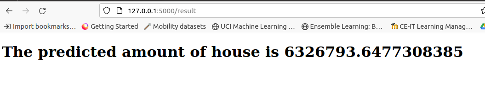
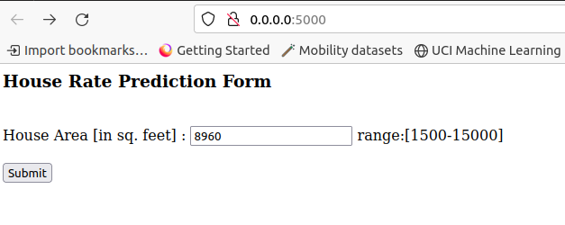
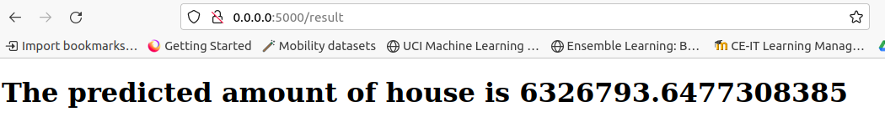

ML Deployment using Flask
Deploy the ML project using Flask
Deployment of House Rate Prediction
To predict the new data, we have to deploy the model (e.g., over the internet) so that the outside world can use it.
Flask
Flask is a Python-based micro framework used for developing small-scale websites.
Flask is very easy to make Restful APIs using python.
As of now, we have developed a model i.e
model.pkl, which can predict the house rate.
Quick start project using flask: link
Step:1 Creation for HTML form
We will now design a web application where the user will input the feature value –
house areausing HTML form with nameindex.html.The input data will be given to the model.
The model will predict the house rate for the value feed by the user.
House Rate Prediction Form
index.html:
<html>
<body>
<h3>House Rate Prediction Form</h3>
<br>
<div>
<form action="/result" method="POST">
<label for="area_feature">House Area [in sq. feet] : </label>
<input type="text" id="area_feature" name="area_feature"> range:[1500-15000]
<br>
<br>
<input type="submit" value="Submit">
</form>
</div>
</body>
</html>
Once the data is posted from the form, it should be fed to the model.
Further, the script can load the trained model.
The script can then use the model to predict the house rate based on the feed data.
The prediction is then displayed to the user based on
result.htmlfile.
result.html
<!doctype html>
<html>
<body>
<h1> The predicted amount of house is {{ prediction }}</h1>
</body>
</html>
Step:2 Flask Script
The script must do the following tasks
Task-1: Receive the data entered by the user in
X_testarrayTask-2: Make the prediction using following steps
Load the
scalarandmodelpickle files.Apply normalization on the
X_testdataApply the
model.predict()method on theX_test_Normalizeddata to obtain the prediction
Task-3: return the prediction to render the display to the user using
result.htmltemplate
Task-1: Receive the data entered by the user in X_test array
from flask import Flask, render_template, jsonify, request
app = Flask(__name__)
@app.route('/result', methods = ['POST'])
def result():
if request.method == 'POST':
to_predict_list = request.form.to_dict()
to_predict_list = list(to_predict_list.values())
to_predict_list = list(map(int, to_predict_list))
@app.route("/")
def hello_world():
return render_template("index.html")
Task-2: Make the prediction using following steps
- Load the `scalar` and `model` pickle files.
- Apply normalization on the `X_test` data
- Apply the `model.predict()` method on the `X_test_Normalized` data to obtain the prediction
import numpy as np
import pickle
def ValuePredictor(to_predict_list):
X_test = np.array(to_predict_list).reshape(1, 1)
#Load the instance of Standarscalar object
scaler = pickle.load(open("scaler.pkl", "rb"))
#Normalize the data
X_test_Normalized = scaler.transform(X_test)
loaded_model = pickle.load(open("model.pkl", "rb"))
result = loaded_model.predict(X_test_Normalized)
return result[0]
Task-3: return the prediction to render the display to the user using result.html template
return render_template("result.html", prediction = prediction)
Combining the tasks:
from flask import Flask, render_template, jsonify, request
import numpy as np
import pickle
app = Flask(__name__)
def ValuePredictor(to_predict_list):
X_test = np.array(to_predict_list).reshape(1, 1)
#Load the instance of Standarscalar object
scaler = pickle.load(open("scaler.pkl", "rb"))
#Normalize the data
X_test_Normalized = scaler.transform(X_test)
loaded_model = pickle.load(open("model.pkl", "rb"))
result = loaded_model.predict(X_test_Normalized)
return result[0]
@app.route('/result', methods = ['POST'])
def result():
if request.method == 'POST':
to_predict_list = request.form.to_dict()
to_predict_list = list(to_predict_list.values())
to_predict_list = list(map(int, to_predict_list))
prediction = ValuePredictor(to_predict_list)
return render_template("result.html", prediction = prediction)
@app.route("/")
def hello_world():
return render_template("index.html")
We will execute the flask application from local system using the following command:
flask --app script.py run
User interface for getting the house area feature

Display of house rate prediction to user
Deployment of house rate prediction model in docker using Flask
We will use the
Gunicornfor deploying the ML projectGreen Unicornis a Python Web Server Gateway Interface HTTP server.
Update the requirements.txt to include the following files:
flask
gunicorn
templates: folder containing two html templates – index.html and result.htmlmodel.pkl: pickle file of trained modelrequirements.txt: a list of required librariesscaler.pkl: pickle file of scalar object used for normalizing the datascript.py: flask script to host the model over the webpage
#Using the base image with Python 3.10
# FROM python:3.10
FROM python:3.10
#Set our working directory as app
WORKDIR /app
# Copy the model's directory and server.py files
#COPY requirements.txt ./requirements.txt
#COPY script.py ./script.py
#COPY model.pkl ./model.pkl
#COPY scaler.pkl ./scaler.pkl
COPY RequiredFilesForDocker ./
#Installing Python packages through requirements.txt file
RUN pip install -r requirements.txt
#Exposing port 5000 from the container
EXPOSE 5000
#Starting the Python application
CMD ["gunicorn", "--bind", "0.0.0.0:5000", "script:app"]
Now, build the above docker file using following docker command:
foo@bar: $ sudo docker build -t house_rate_prediction_deployment -f dockerFile .
Now, build the above docker file using following docker command:
foo@bar: $ sudo docker run --name hrp_d_container -p 5000:5000 house_rate_prediction_deployment
Note: Use -d to run it in detached mode.
Ouput
HTML form to get value from user

View displaying the house rate prediction to the user

Compose is a tool for defining and running multi-container Docker applications.
With Compose, you use a YAML file to configure your application’s services. Then, with a single command, you create and start all the services from your configuration.
Compose works in all environments; production, staging, development, testing, as well as CI workflows. It also has commands for managing the whole lifecycle of your application:
Start, stop, and rebuild services
View the status of running services
Stream the log output of running services
Run a one-off command on a service
The key features of Compose that make it effective are:
- Have multiple isolated environments on a single host
- Preserve volume data when containers are created
- Only recreate containers that have changed
- Support variables and moving a composition between environments
Create the new file named compose.yaml
Now, place the following code into the file
services:
hrp_d_Container:
image: house_rate_prediction_deployment
ports:
- 5000:5000
Then, run the following command:
foo@bar: $ sudo docker compose -f compose.yaml up